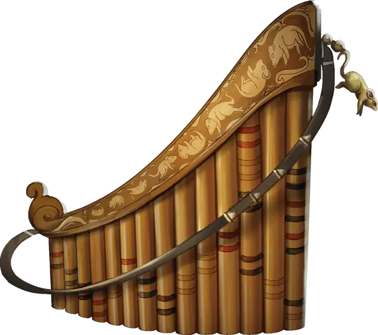

Свирель канализации
Pipes of the Sewers
Чудесный предмет, необычный (требуется настройка)

Рекомендованная стоимость 400 зм
Пока эта свирель при вас, обычные Крысы и Гигантские крысы относятся к вам Безразлично и не будут атаковать, если вы не угрожаете или не причиняете им вреда.
Свирель имеет 3 заряда и восстанавливает 1к3 израсходованных зарядов на каждом рассвете. Если вы действием Магия играете на свирели, Бонусным действием вы можете потратить от 1 до 3 зарядов, призывая один Рой крыс за каждый потраченный заряд, если в пределах полумили от вас достаточно крыс, чтобы их можно было призвать таким образом (по решению Мастера). Если недостаточно крыс для формирования роя, заряд теряется. Призванные рои двигаются по кратчайшему доступному маршруту по направлению к источнику музыки, но не находятся под вашим контролем.
Каждый раз, когда Рой крыс, находящийся вне контроля другого существа, оказывается в пределах 30 футов от вас, пока вы играете на свирели, Рой совершает спасбросок Мудрости Сл 15. При успешном спасброске Рой ведет себя как обычно и не может быть покорён музыкой свирели в течение следующих 24 часов. При неудачном спасброске рой покоряется музыке свирели и становится Дружелюбным к вам и вашим союзникам, пока каждый раунд вы продолжаете играть на свирели действием Магия. Дружелюбный рой повинуется вашим приказам. Если вы не отдаёте никаких приказов Дружелюбному рою, он защищает себя, но в остальном не предпринимает никаких действий. Если Дружелюбный рой начинает свой ход на расстоянии более 30 футов от вас, ваш контроль над этой стаей прекращается, а рой ведет себя как обычно и не может быть покорена музыкой труб в течение следующих 24 часов.